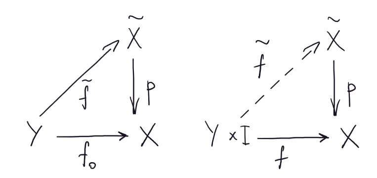

Во многом фундаментальную группу и накрытия можно рассматривать как две точки зрения на одно и тоже.
Определение: Топологическое пространство \(X\) локально линейно связно, если у любой точки \(x \in X\) и любой окрестности \(U_x\) точки \(x\) существует линейно связная окрестность \(V_x \subset U_x\).
Определение: Гребень – это \(\{(t, 0)|\,\,\,\, t \in [0, 1]\}\cap\{(0, t)|\,\,\,\, t \in [0, 1]\}\cap\{(\frac1n, t)|\,\,\,\, t \in [0, 1]\}\).
Утверждение: Гребень не локально линейно связен.
Доказательство: см.картинку \(\,\,\,\,\blacksquare\)
Определение: Пусть \(Y\) и \(X\) – линейно связные и локально линейно связные топологические пространства и \(p: Y \to X\) – непрерывное (сюръективное) отображение. Пусть у каждой точки \(x \in X\) существует окрестность \(U_x \in \tau_X\), такая что \(p^{-1}(U_x) = \sqcup_{\alpha}V_{\alpha}\) и \(\forall \alpha \,\,\,\, p_{|V_{\alpha}}: V_{\alpha} \to U_x\) – гомеоморфизм. Тогда \(p\) – накрытие пространства \(X\) пространством \(Y\).
У любого пространства \(X\) существует тривиальное накрытие \(Y = X\) и \(p = \operatorname{id}\).
\(Y = \mathbb{R}^{1} \,\,\,\, X = S^1 \,\,\,\, p(t) = e^{2\pi i t}\).
\(X = \mathbb{R}P^2 \,\,\,\, Y = S^2 \,\,\,\, p\) – отождествление противоположных точек.
Лемма: (поднятие пути) Пусть \((Y, p, X)\) – накрытие, \(x_0 \in X, \,\,\,\, y_0 \in Y \,\,\,\, p(y_0) = x_0, \,\,\,\,\gamma: [0, 1] \to X \,\,\,\, \gamma(0) = x_0\). Тогда \(\exists!\) путь \(\tilde{\gamma}: [0, 1] \to Y\), такой что \(p\circ \tilde{\gamma} = \gamma\). 1
Доказательство:
В силу леммы Лебега выберем разбиение \(0 < t_0 < \ldots < t_n\) отрезка \([0, 1]\), так чтобы \(\gamma([t_i, t_{i+1}]) \subset U_{i}\), где \(U_{i}\) окрестность, прообраз которой состоит из дизъюнктного объединения \(V_{i\alpha}\).
Выберем среди \(V_{i\alpha}\) окрестность \(V_{i}\), содержащую \(y_0\). \(p_{|V_i}\) – это гомеоморфизм \(U_i\) и \(V_i\), то есть, рассмотрев композицию \(p_{|V_i}^{-1}\circ \gamma_{|\gamma^{-1}(U_i)}\) и перепараметризовав ее, получим поднятие пути \(\gamma([t_i, t_{i + 1}])\), далее выберем среди \(V_{(i+1) \alpha}\) окрестность, содержащую нужную точку и т.д. \(\,\,\,\,\blacksquare\)
Если что это несложно сделать аккуратно. Реально?
Лемма: (поднятие гомотопии) Пусть \((\tilde{X}, p, X)\) – накрытие. \(f: Y \times I \to X\) – гомотопия и \(\tilde{f}_0: Y \to \tilde{X}\) – непрерывное отображение поднимающее \(f_0\), то есть диаграмма слева коммутативна. Тогда диаграмма справа коммутативна.

Доказательство: При фиксированном \(y\) поднятие \(\tilde{f}_y\) для \(f: \{y\}\times I \to X\) существует по предыдущей лемме. А следовательно определено отображение \(\tilde{f}\). Непрерывность проверяется поточечно. Единственность следует из единственности в лемме 2 \(\,\,\,\,\blacksquare\)
Лемма: Пусть \((\tilde{X}, p, X)\) – накрытие. Тогда гомоморфизм \(p_{*}: \pi_1(\tilde{X}, x_0) \to \pi_1(X, p(x_0))\) – инъективен, то есть \(p_{*}(\pi_1(\tilde{X}, x_0))\) подгруппа в \(\pi_1(X, p(x_0))\), причем она состоит из тех классов петель, поднятия которых – петли.
Доказательство: По предыдущей лемме ядро тривиально. \(\,\,\,\,\blacksquare\)
Теорема: Пусть \((\tilde{X}, p, X)\) – накрытие. \(f: (Y, y_0) \to (X, x_0)\) и \(Y\) линейно связно и локально линейно связно. Поднятие \(\tilde{f}: (Y, y_0) \to (\tilde{X}, \tilde{x}_0)\) отображения \(f\) существует \(\iff f_{*}(\pi_1(Y, y_0)) \subset p_{*}(\pi_1(\tilde{X}, \tilde{x}_0))\).
Доказательство:
Определение: Накрытие \((\tilde{X}, p, X)\) универсальное, если \(\pi_1(\tilde{X}) = \{e\}\).
\((\mathbb{R}^1, p, S^1)\) – универсально.